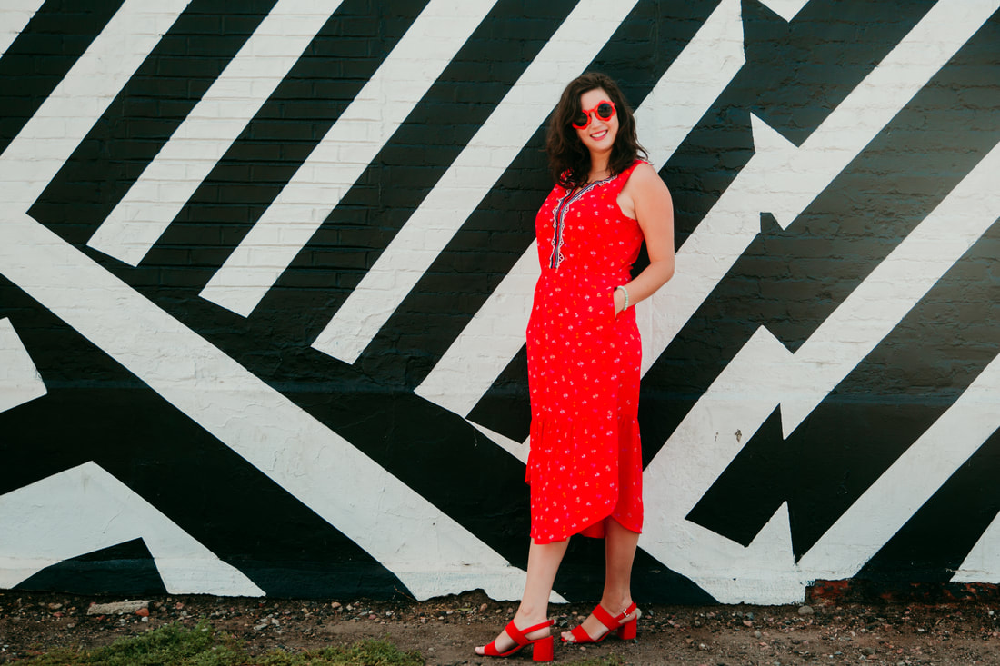

I'm Emma.
I am passionate about graphic design and illustration.
I have a wide array of creative skills and have been in the design field
since graduating with a degree in art from Goshen College in 2013. I first discovered my
love for design when I was on the newspaper staff in high school. I still feel my heart
warm when I see graphic designer as my job title and think of my 16-year-old self dreaming
of becoming a designer one day!
currently
I am available for freelance work graphic design and illustration work and I also have work available for art licensing!
I work out of Lightbox Collective in Goshen, Indiana, and with clients from many industries.
In the fall of 2024 I am beginning my academic journey to pursue a Masters of Fine Arts in Design at the University of Notre Dame!
ambition
I want to learn and grow and experience new adventures. I am up for challenge and like to stretch myself - not just at yoga class.
I want my work to be meaningful and help to make the world a more equitable, healthy, safe, and inclusive place.
how I work
- I am an avid user of creative suite best practices like defining and using text styles always, labelling my layers and sticking to a grid
- I over-communicate project status
- I say this a lot to my fellow designers: "can you come look at my screen and see if you think this looks balanced?"
- I read every word of copy or the entire creative brief before I start designing
- I care therefore I kern
- I take care of the small, menial tasks first so I can get in the flow for creative work
- I prefer to talk with clients in person, ask my questions before a project and present my work
- I am punctual
- I love to learn new things and challenge myself
- I am friendly and enjoy finding ways to connect
values
- Ownership - when in doubt, I google it (or take a SkillShare course)
- Direct, honest communication, transparency is always best
- Consensus and finding compromise
- Meeting each project with the same enthusiasm and professionalism - no matter how small
- Inclusivity and diversity
- Creative new approaches, disrupting the status quo and not doing things the way they've always been done
- Quality over quantity
- Working smart and hard but also creating healthy boundaries between home and work
- Curiosity and creativity
- Collective focus on mission
- Kindness